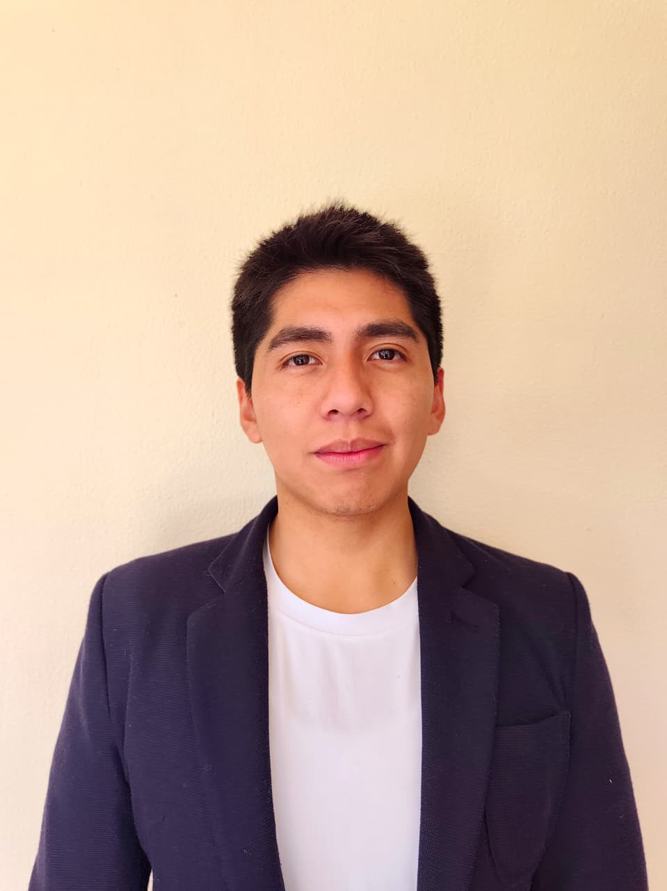

Victor Manuel Alarcon Hurtado | WDD 130
Hello! My name is Victor Manuel Alarcon Hurtado and I am 26 years old, from La Paz, Bolivia. I speak English, Spanish, and Portuguese. I love playing volleyball and dancing in my free time.

Hello! My name is Victor Manuel Alarcon Hurtado and I am 26 years old, from La Paz, Bolivia. I speak English, Spanish, and Portuguese. I love playing volleyball and dancing in my free time.
